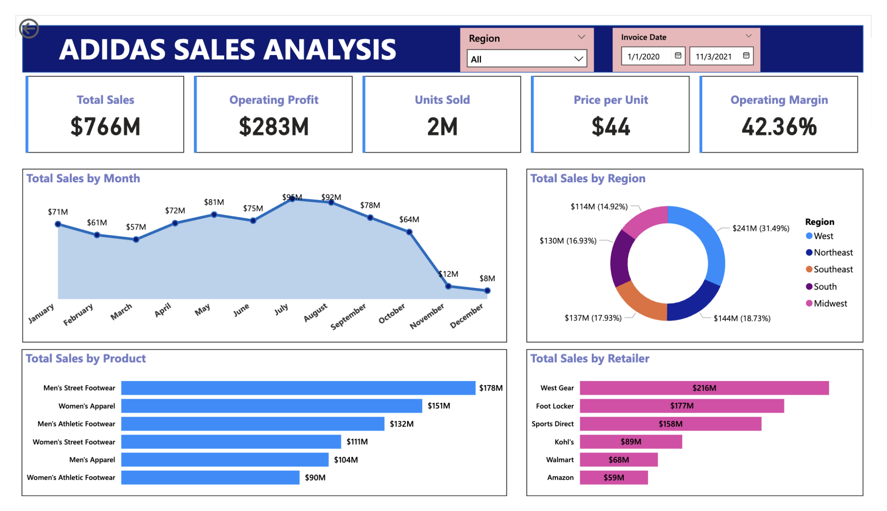

Access the code on GitHub: Here.
As a sneaker head I knew I had to work on this project and Adidas is an ultra-competitive industry where timing, geography, and product preferences can change everything. As a data analyst, I started with one central question: How can we turn raw sales data into better business decisions? I wasn’t just looking for which shoes sold the most, I wanted to understand which products actually brought in the most profit, how discounts affected bottom-line revenue, and how different regions performed over time.
What stood out to me immediately was the quiet profitability of accessories. While everyone naturally focuses on sneakers and apparel, accessories like socks, bags, and caps showed significantly higher profit margins relative to their sales volume. It was a powerful reminder that sometimes the smallest product categories can have the biggest strategic potential.
Another surprising insight came from comparing regions. North America led in sheer revenue, but Western Europe came out ahead in profitability. That contrast really stuck with me—it showed that selling more doesn’t always mean earning more. Pricing, discounting, and operational efficiency all play a role in making sales count.
Lastly, the impact of discounting made me pause. Deep discounts didn’t always translate to higher profits, in fact, they often eroded margins for top-selling items. That flipped the usual retail narrative for me and emphasized the importance of being precise and data-driven with promotional strategies.
What I like most about data analysis is how it reveals what’s not immediately obvious. It’s less about proving a point and more about discovering patterns that weren’t on your radar to begin with. The real value shows up in the unexpected details, the ones that shift how you look at the entire picture.
